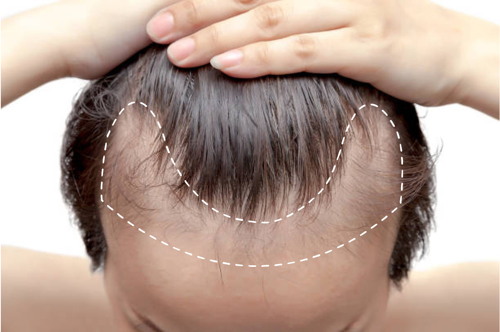

<link rel="stylesheet" href="/content/css/slick.css">
<style>
    .breadcrumbs {
    display: none;
}
.body.page h1 {
    display: none;
}
.css-1hcx8jb {
    display: none !important;
    font-size: 12px;
}
.page-heading {
    padding-top: 4vh;
}
@media (min-width: 801px) and (max-width:1149px) {
    .body.page {
        margin-top: 2.5rem !important;
    }
}
.body.page {
  padding: 0 !important;
}
p {
  margin: 0 !important;
}
body {
  -ms-overflow-style: none;
  scrollbar-width: none;
  overflow-y: scroll;
  overflow-x: mensden;
}
.body.page .container {
  max-width: 100% !important;
  padding: 0px !important;
}
.page {
  margin: 0 !important;
  margin-bottom: 0 !important;
  margin-top: 0 !important;
  max-width: 100% !important;
}
.page-content.page-content--centered {
  padding: 0 !important;
  width: 100% !important;
}

</style>
<!--  -->
<section class="hairpatch">
  <div class="">
    <picture>
      <source media="(min-width:700px)" srcset="../../../assets/img/hairpatch/banner-pc.png" type="image/jpng" />
      
    </picture>
  </div>
  <div>
    <h2>Hair Patches</h2>
    <span></span>
    <div>
      
    </div>
    <div class="patchGrid">

    </div>
  </div>
  <div>
    <div>
      <div>
        <picture>
          <source media="(min-width:700px)" srcset="../../../assets/img/hairpatch/image2-desktop.png" type="image/jpng" />
          
        </picture>
      </div>
      <div>
        <picture>
          <source media="(min-width:700px)" srcset="../../../assets/img/hairpatch/image3-desktop.png" type="image/jpng" />
          
        </picture>
      </div>
    </div>
    <div>
      <div>This hair system is made with a super soft, clear see-through thin-skin polyurethane base that looks just like your own skin when attached. It can be sized down to match the area of your frontal hair loss, providing much-needed coverage only where needed. It comes with v-looped 4-6'' high-quality soft fine regular Indian remy human hair strands for you to showcase the best hairstyles and latest trends.</div>
    </div>
  </div>
  <div class="patchBottomGrid">

  </div>
</section>
<script>
  function addHairPatch(ids) {
    let token = $("[name=store-token]").val();
    fetch("/graphql", {
            method: 'POST',
            headers: {
                'Content-Type': 'application/json',
                'Authorization' : `Bearer ${token}`
            },
            body: JSON.stringify({query: `
                query SingleProduct {
                    site {
                        products (entityIds:${ids}) {
                        edges {
                            node {
                                            entityId 
                                            sku 
                                            path 
                                            name 
                                            customFields {
                                                edges {
                                                    node {
                                                        name 
                                                        value
                                                    }
                                                }
                                            }
                                            categories { 
                                                edges {
                                                    node {
                                                        name
                                                    }
                                                }
                                            }
                                            defaultImage {
                                                url(width: 500, height: 500)
                                            }
                                            prices {
                                                price{
                                                    ...PriceFields
                                                }
                                            }
                                        }
                        }
                        }
                    }
                    }
                    fragment PriceFields on Money{
                        value 
                        currencyCode 
                        formatted
                    }
                `})
            })
            .then(r=>r.json())
            .then(r => {
              let products = r.data.site.products.edges;
              console.log (products)
            })

  }
  window.addEventListener("DOMContentLoaded", function() {
    addHairPatch('[7261, 7262]')
  })
</script>